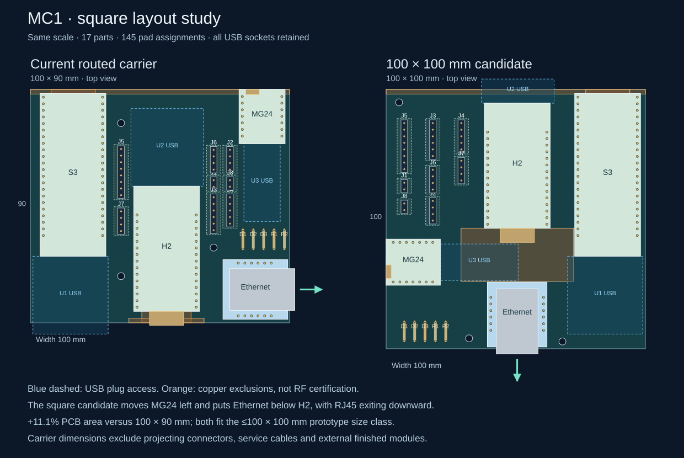

Historical design study. Its findings describe the pre-Nano revision. The selected design is now implemented in the
current MC1 carrier and firmware; use those files for construction.
← Current MC1 carrier · Compact S3 review →Engineering study · 17 October 2026 · same electrical interfaces
MG24 left. Ethernet below H2.
A square carrier without USB removal.
The requested arrangement fits and routes in 100 × 100 mm with all USB connectors retained, after moving S3 to the right and orienting H2 for upward USB access.
Separate routed candidate: zero native ERC/DRC violations, zero unrouted items and zero schematic-parity issues. The active 100 × 90 mm carrier is unchanged.

Open the drawing for readable full-size detail. Module bodies and pad positions come from the CAD ledgers.
What improves
- MG24 is horizontal at the left edge; its antenna faces outward.
- Ethernet continues the H2 column and the RJ45 mouth faces down, 2 mm beyond the carrier.
- The same 17 parts and 145 pad assignments are retained. No sockets, extra electronics or firmware changes are required.
What still needs proof
- H2 antenna is inside the carrier outline, with an explicit copper-free region. RF performance must be measured.
- The retained MG24 USB allowance passes through a narrow slot: only about 0.65 mm to H2 antenna and 0.68 mm to WIZ PCB. Confirm actual plug, cable lift and button access.
- Connector removal is not needed and would complicate programming or recovery. All radio and physical assembly behavior remains untested.
- Ceiling mounting is assumed to put the populated side toward the room. It does not remove local antenna loading by the carrier; the central H2 position is not the manufacturer-preferred edge placement.
Measured findings
- Carrier area increases from 9,000 to 10,000 mm² (+11.1%).
- Candidate retains the original 30 mm USB plug access length. The XIAO envelope is 14 mm wide.
- H2 antenna end to WIZ PCB separation: 15.325 mm. This is a geometric allowance, not a measured RF guarantee.
- Native candidate route: 521 track/via items; 13 geometry, electrical-contract and project-rule tests pass.
Why keep the USB ports?
Removing a socket does not shrink the module PCB or remove its antenna requirements. This arrangement keeps the ports and their access space. XIAO uses its onboard USB programming probe; removing that interface would add recovery work.
USB and antenna review · Programming and service review
Ceiling mounting
Assuming the populated side faces the room, the open space helps propagation. It does not remove the influence of nearby carrier copper on the antenna itself. Keep copper, vias and permanent wiring out of the antenna-specific clearance region; retain the intended ground plane under the other circuitry. Spacers from the ceiling do not change the antenna-to-carrier separation.
The interior H2 antenna is still a compromise. Espressif recommends an edge-facing antenna and explicitly discourages a central placement with a four-sided internal cutout. A small hole alone is not a proven fix. Ceiling and near-field explanation · Manufacturer placement guidance.
Fabrication cost
10,000 versus 9,000 mm² is an 11.1% area increase. Both outlines satisfy the size criterion for advertised ≤100 × 100 mm two-layer prototype offers from JLCPCB and PCBWay. This is not a quotation or a guarantee of equal delivered cost.
Candidate placements
Top-view coordinates in millimetres. Origin: upper-left carrier corner. Rotation follows the native KiCad footprint convention.
Evidence
Study results · Candidate pad ledger · Study notes
Full-size assembly drawing · Native candidate PCB · CAD reproduction and limitations
Native KiCad candidate checks: 0 ERC, 0 DRC, 0 unrouted, 0 parity issues; 13 candidate tests pass. All 17 part identities and 145 pad assignments match the active design. No physical assembly, ceiling-mount or radio-range test has been performed.